Supermetry logo concepts
Round four: four directions that look nothing alike, each with its own meaning. Pick the one that feels closest and I’ll refine it into the final set. Earlier rounds are still in brand/png.
Before you commit: Supermetrics (with an s) is an established marketing-analytics company. Run a trademark search on “Supermetry” before you spend money on the brand.
Eclipse
RecommendedThe sun is hidden, and that is exactly when you can see its corona. Supermetry hides who your visitors are and shows you what they do. Minimal and dramatic, it reads at any size and works on white as well as dark.
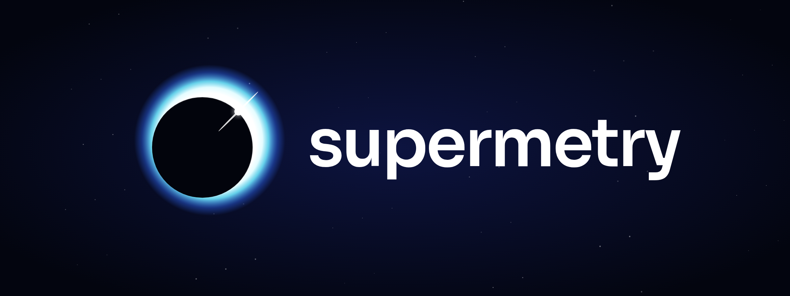
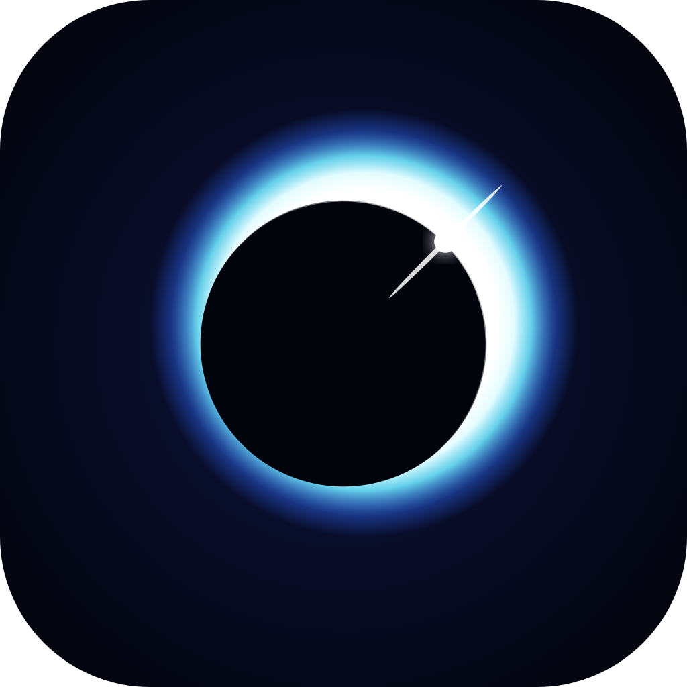
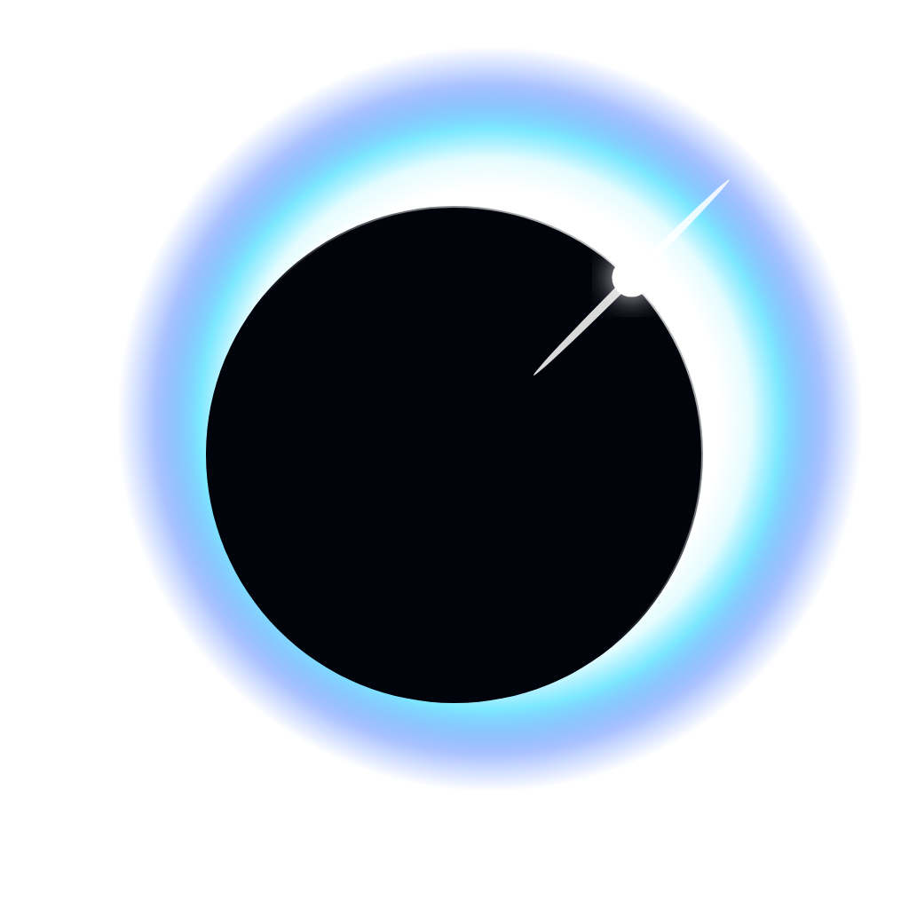
Aurora
Auroras are invisible particles made visible. Anonymous visitors become flowing streams of traffic, rising to the right. Calm, colourful and modern.
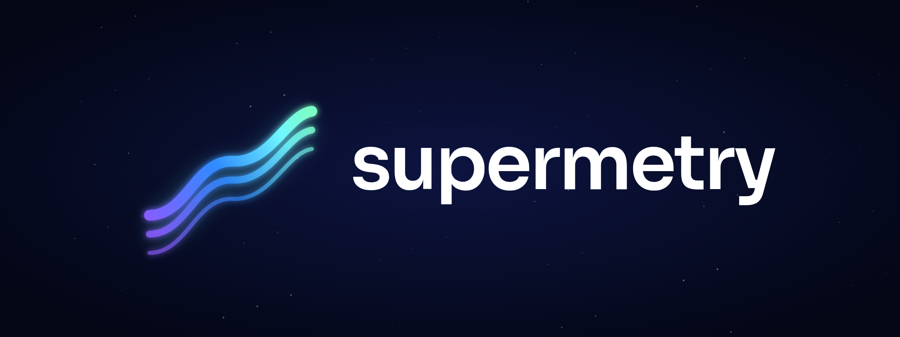
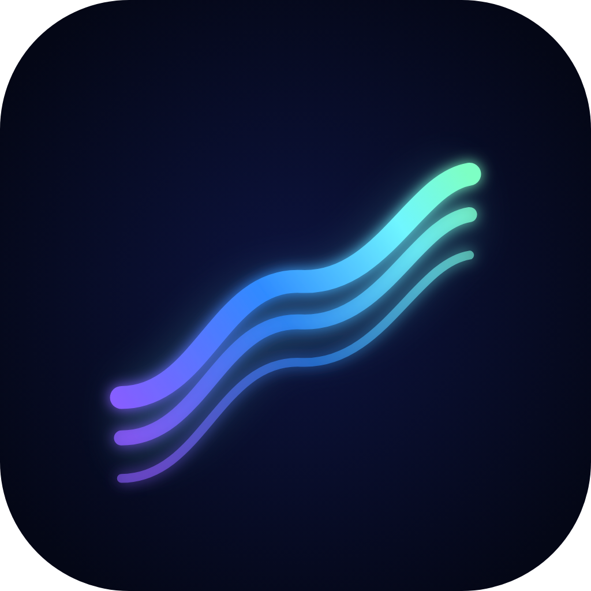
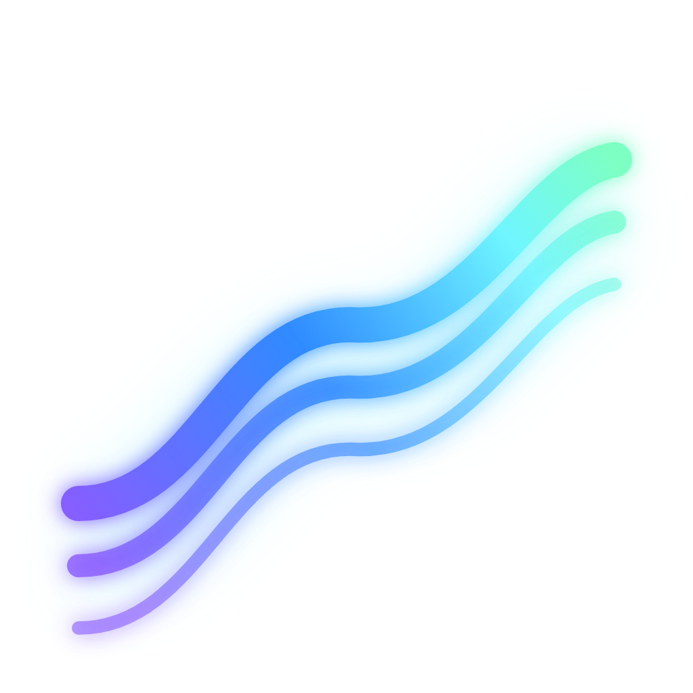
Wormhole
Rings falling into depth: drill from the overview straight down into any page, source or visitor journey. The most sci-fi of the four.
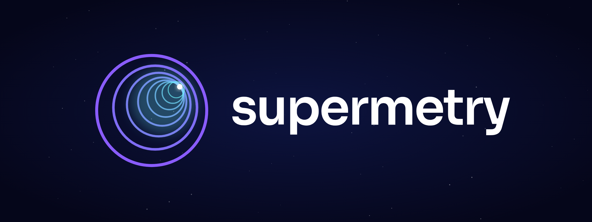
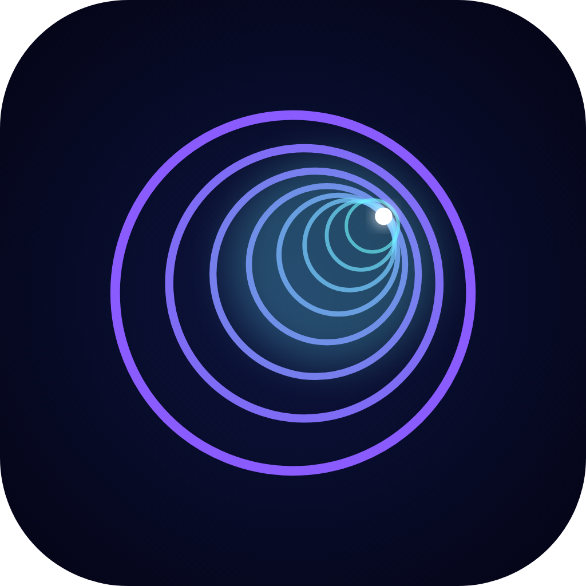
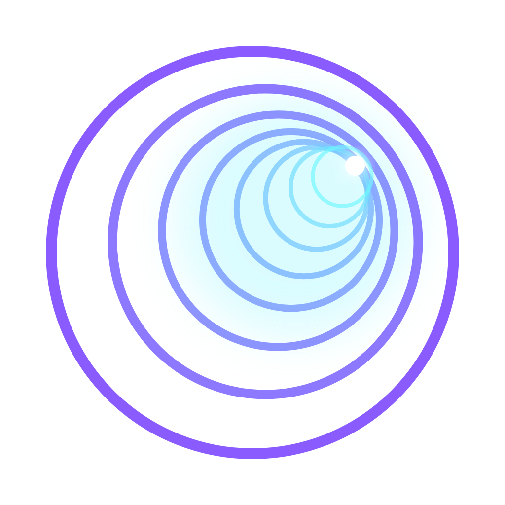
Astrolabe
The astrolabe was the first instrument for measuring the sky; “-metry” means measuring. A modern one in champagne gold: precise and premium. Its needle is close to the Safari compass, so it would need reworking.
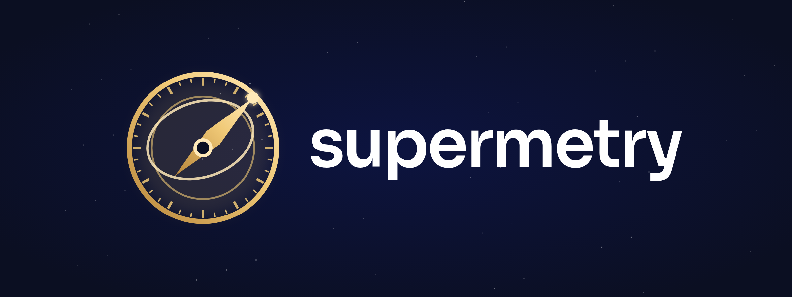
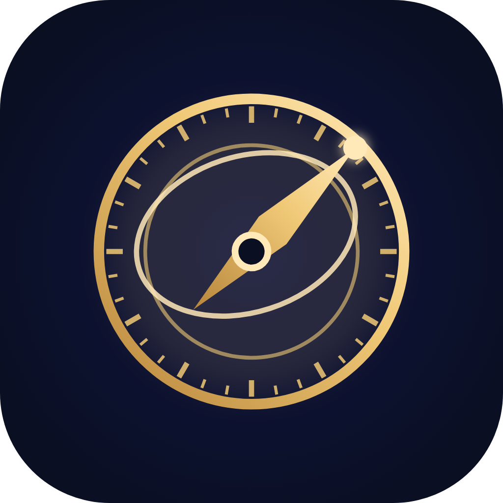
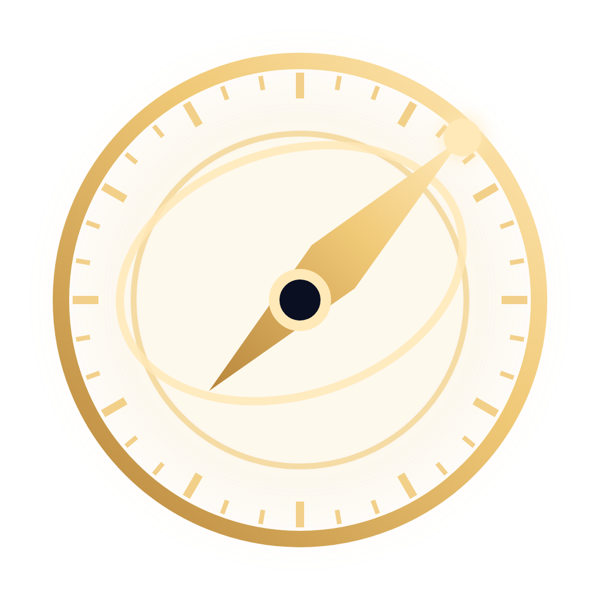